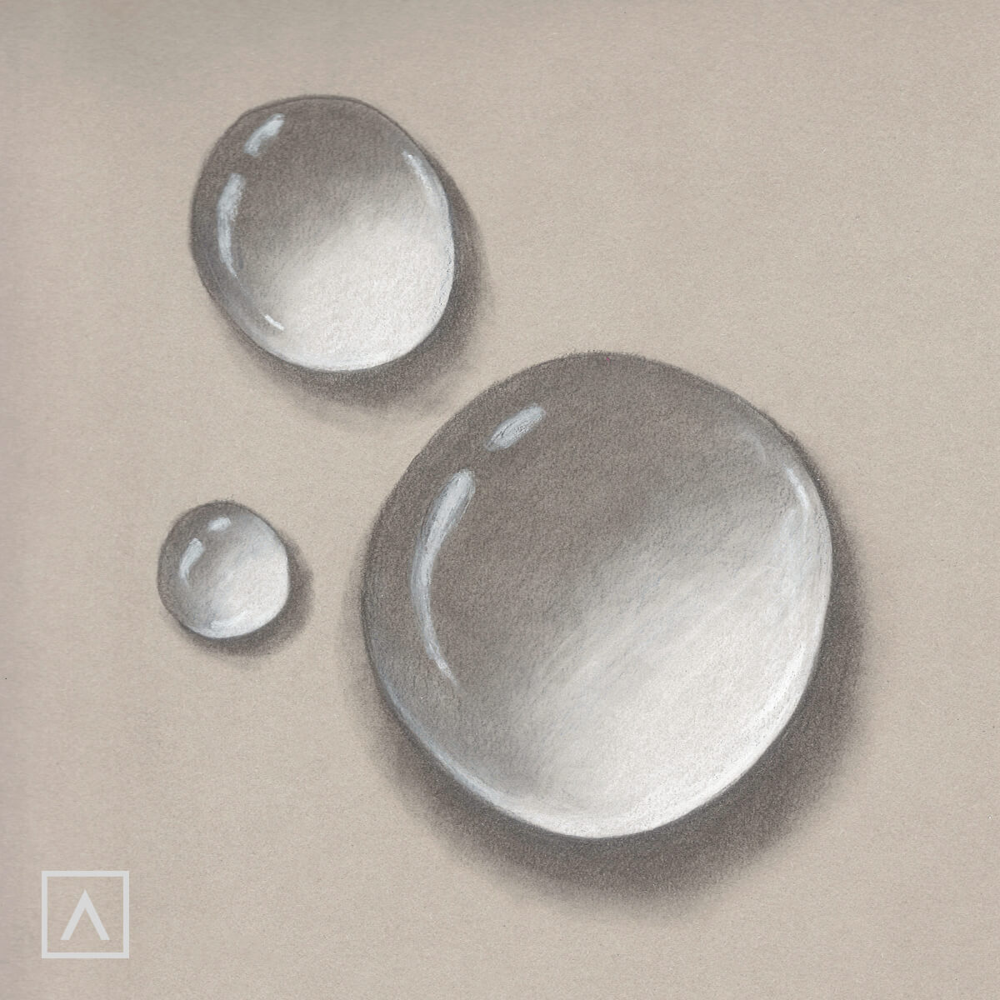

First, why do we have to know?
Drawing water droplet can help you practice drawing and you can do it when you are bored. It also take only a few minutes to draw it when you get good at it.
This ellipse will be the base of your water droplet. It can be circle or long ellipse...any way you want.
It is shade of the water droplet. You can hold hard at top and hold softly as you get to bottom of your droplet.
It is also shade of the water droplet. You can color it with pencil around the bottom of ellipse and rub it with you finger.

Final part!! Erase 2 or 3 big and small circles on top of ellipse for highlight.
This is just my style of drawing water droplet, so there's no right or wrong doing it if it looks like water droplet.
Just look at your picture and if it looks like a water droplet! If it's not, maybe practice drawing gradients or use better eraser to draw highlight more clearly.